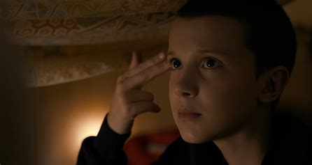
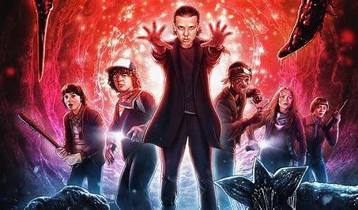
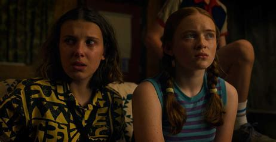

Stranger Things is an American science fiction horror streaming television
series created by the Duffer Brothers. The series follows the adventures
of a group of young friends in the fictional town of Hawkins, Indiana, as
they battle a supernatural monster from an alternate dimension. The series
has been praised for its characterization, pacing, atmosphere, acting, soundtrack,
directing, writing, and homages to 1980s horror and science fiction films.
It has become a pop culture phenomenon, with many referencing and parodying
aspects of the show.
Season 1
The first season introduces Hawkins and its inhabitants & a supernatural
monster from another dimension. A group of middle-schoolers
called the "Party"—attempt to investigate the strange occurrences, while a government agency called the
Department of Energy (D.O.E.) is also on the case. Along the way, they discover that the monster is
controlled by a girl named Eleven, who was experimented on by the government. The season culminates in a
battle between the Party and the monster.

Season 2
In the second season, the Party discovers that the Upside Down is connected to the town's lab,
and the Monster is now free to enter Hawkins. The Party must now team up with the D.O.E. to close the
gate to the Upside Down and save Hawkins. Along the way, they discover that the Monster is controlled by
a powerful being called the Mind Flayer, which is seeking to take over the town. The season culminates
in a battle between the Party, the D.O.E., and the Mind Flayer, with the help of Eleven.

Season 3
Stranger Things season 3 sees the threat of the Mind Flayer return after
Russian scientists open a secret Gate project beneath Hawkins Mall, the Party discovers that the Monster has
been using the town's technology
to manipulate people, and they must find a way to stop it. The season culminates in a battle between the
Party and the Monster, with the help of the newly introduced psychological horror creature, the Mind
Flayer. The season is sure to give you chills.
